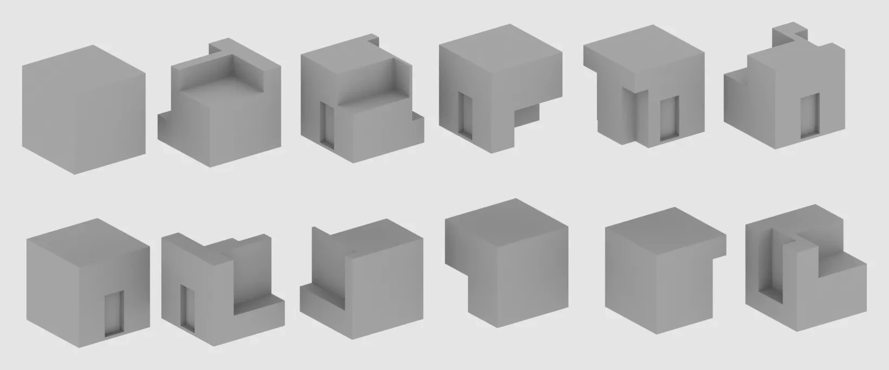
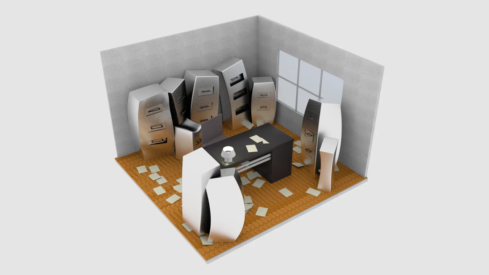

Physicalization of AR/XR
- Organization
- Carnegie Mellon University
School of Design - Role
- Undergraduate thesis
Research, design, fabrication - Built with
- Unity · Cinema 4D
Arduino · ESP32 · Raspberry Pi
Laser cutting · 3D printing - Duration
- 2022
In 2021 most AR sat on top of the world: overlays floating above surfaces, anchored to objects but never really part of them. I wanted to know what it would take to physicalize it — to push AR into the material itself.
I started by designing a complete AR experience. The first prototype fell apart on tracking stability, lighting, and alignment. The mechanics were the problem, not the story I was telling with them, so I stopped and built six physical tools instead — one per mechanic, each one built to show what that mechanic needs from the physical world.
All six pointed at the same thing. Surface finish, form, and contrast determine whether the digital layer holds, so you have to pick them deliberately.
This was research and prototyping, built by hand, not a product that shipped.
Six tools

What I did
- Reframed the thesis
- Switched from making a single AR experience to building tools for designing AR, once the first prototype showed where the real limits were.
- Six prototyping tools
- One per mechanic: image mapping, 3D masking, shader effects, and sensor input. Each isolates a single behaviour so it can be tested on its own.
- Physical fabrication
- Designed and made the objects: laser-cut and 3D-printed forms, printed image targets, and housings built to hold a specific tracking condition.
- Hardware and software
- Unity and Cinema 4D for the digital layer; Arduino, ESP32, and Raspberry Pi over Bluetooth for the sensor tools; laser cutting and 3D printing for the forms.
- Testing method
- Surfaced problems that usually only turn up during implementation: tracking loss on reflective surfaces, occlusion breaking when things are misaligned, drift as the light changes.
- The argument
- Argued that AR embedded in physical material behaves differently from AR layered over it, and that you can design for the difference.
Making them
Testing materials as tracking anchors
Every finish is a different tracking target. I laser-etched the same pattern into woods, papers, and card stocks and tested each one as an anchor. Matte held. Gloss and low contrast dropped out.
Choosing a material is choosing how reliably the digital layer will hold.

Form, iterated until the illusion held
For 3D masking the physical object has to match its virtual replacement closely enough that nobody notices the swap. It took twelve cube variants, modelled in Cinema 4D and then cut or printed, before the alignment held.


Modelled and made in parallel
Each form existed twice: once in Unity and Cinema 4D as the thing the camera would render, once on the bench as the thing it had to replace. Building both at once is how I found the mismatches.



What it found
Across all six, the physical decisions drove the digital behaviour. Tracking dropped when surfaces were too reflective. Occlusion broke when the geometry was off by millimetres. The sensor tools only felt direct when nothing sat between the gesture and the parameter.
None of this is easy to judge at design time, because you can't see it until something is built. The tools were an attempt to find out sooner.
I set out to build an AR experience and ended up building instruments for designing them. That turned out to be the more useful thing to have made.

Out of the studio
Outside, the tools stopped being desk objects. The masking mechanic that hides a wooden cube on a cutting mat can also hold a room-sized interior in a field. The failure modes don't go away at that scale, they just follow the light instead.